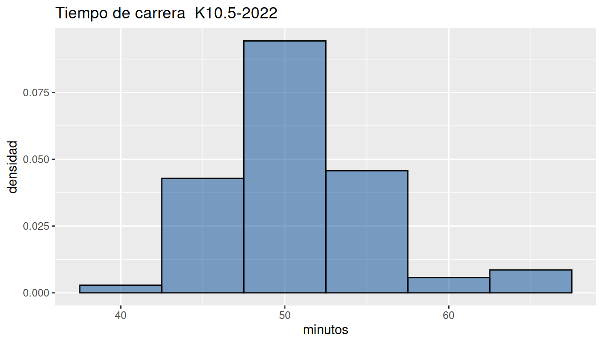

Experiencia
Nivelatorio de Estadística
El proceso de manejo de datos comprende una serie de etapas que permiten cumplir los objetivos trazados en una investigación o proyecto de Ciencia de Datos como lo menciona Antonio Vazquez Brust en su libro Ciencia de Datos para gente sociable. Es necesario para realizar este proceso recordar o incorporar conceptos de Estadística.
 Figura 1.1 Etapas en la aplicación de ciencia de datos
Figura 1.1 Etapas en la aplicación de ciencia de datos
Tomado de : Ciencia de Datos para Gente Sociable
Debemos relacionar los datos con un propósito (objetivos) que nos permita proponer soluciones o metodologías y así plantear recomendaciones a un problema en particular, a partir de información estructurada en una bases de datos, conformada por variables (columnas) y registros (filas).
En número de registros por lo regular de gran tamaño, hace necesaria la utilización de un herramientas computacionales para su análisis y procesamiento (en nuestro caso el lenguaje R).
Iniciaremos con el concepto de variable, los diferentes tipos y la forma en que se mide. Esto permitirá relacionarlos con los diferentes formas de resumir los datos a través de tablas, indicadores y su prepresentación gráfica.
Tipos de variables
Inicialmente se examinan las características de las variables que conforman la data.
Las variables se puede clasificar como :
Cualitativas : corresponde a características que pueden tomar como valores palabras. Pueden ser medidas en escala nominal u ordinal
Cuantitativas : corresponden a valores numéricos que representan una característica del objeto o individuo observado. Pueden tener escala de intervalo o de razón. A su vez estas variables se pueden clasificar como :
Discretas : se caracteriza por que están relacionadas con el conteo y por lo general empiezan por : número de…
Continuas : estas variables se originan en la medición y pueden tomar cualquier valor real
Nota
El termino variable en Estadística se refiere a una característica de interés que permite una agrupación o análisis y que pertenecen a una población o muestra de interes. Ejemplo : edad, sexo, ingresos mensuales, profesión. De ellas puede ser de interés obtener una tabla de frecuencias, un indicador de centro como la media o la moda y una gráfica.
En el área de sistemas este concepto corresponde a un elemento que se modifica o se utiliza para controlar el comportamiento de un sistema y que ocupa un espacio temporal o definitivo de memoria. Ejemplo de variables que pueden ser de interes desde los sisemas pero nó desde el análisis de datos: id, número de cédula, dirección, nombre, e-mail, telefono.
En este curso nos enfocaremos en las variables aleatorias estadísticas
Tipos de escala
A la clasificación anterior añadimos la forma en que se pueden medir las variables, es decir el tipo de escala:
Tabla 1.1 Escalas de medición por tipo de variable
| Tipo de variable | escala de medición | ejemplo |
|---|---|---|
| Cualitativa | nominal (no existe orden) | estado civil ( soltero, casado, separado, viudo, unión libre) |
| color ( blanco, negro, rojo, azul, amarillo, verde) | ||
| pais (co, pe, us, uk, es,..) | ||
| ordinal (con orden) | nivel de ansiedad (bajo, medio, alto) | |
| clima laboral (excelente, muy bueno, bueno, regular, muy regular) | ||
| nivel de satisfacción (baja, media, alta) | ||
| Cuantitativas | intervalo | temperatura (centígrados, kelvin, Fahrenheit) |
| operacionalización de clima laboral | ||
| de razón | edad | |
| tiempo de ejecución | ||
| precio del artículo en dólares |
Dependiendo el tipo de variable y su escala de medición se tomaran los respectivos indicadores y gráficos para su correcta simplificación y representación
Tabla 1.2 Indicadores y tipos de gráficos por tipos de variable
| Tipo de variable | Escala | Indicadores | Gráfico |
|---|---|---|---|
| Cualitativas | |||
| Nominal | moda | diagrama de torta | |
| Ordinal | moda | diagrama de barras | |
| diagrama de mosaico | |||
| Cuantitativas | Intervalo-razón | media | diagrama de tallos y hojas |
| mediana | histograma | ||
| mínimo | diagrama de cajas | ||
| máximo | diagrama de densidad | ||
| rango | diagrama de puntos | ||
| varianza | diagrama de lineas | ||
| desviación estándar | diagrama de radar | ||
| coeficiente de variación | gráfico likert | ||
| coeficiente de curtosis | mapa de calor | ||
| coeficiente de asimetria | diagramas de dispersión | ||
| percentiles, deciles, cuartiles |
En esta unidad se tratará de manera general los conceptos principales relacionados con el análisis descriptivo de datos, basados en las principales características de los datos, tanto para variables cualitativas como para variables cuantitativas.
El análisis de las variables cualitativas se centra en la construcción de tablas de frecuencia y su representación a través de gráficos de tortas (nominales) y de barras (ordinales), mientras que en el caso de las variables cuantitativas nos centraremos en indicadores de posición, centro, variabilidad o de dispersión y de forma, además de su representación gráfica mediante histogramas, diagramas de cajas, diagramas de dispersión entre otros.
Resumen de indicadores y gráfica
La función del paquete summarytools :
summarytools::descr(x) permite obtener un resumen de
indicadores. Al aplicar la función a un grupo de 70 valores
correspondientes a los tiempo gastados por atletas en recorrer 10.5
kilómetros.
summarytools::descr(data1$value1)Descriptive Statistics data1$value1 N: 70 value1 ----------------- -------- Mean 50.80 Std.Dev 4.62 Min 42.30 Q1 48.42 Median 50.98 Q3 52.91 Max 64.44 MAD 3.64 IQR 4.47 CV 0.09 Skewness 0.60 SE.Skewness 0.29 Kurtosis 0.64 N.Valid 70.00 Pct.Valid 100.00

Los datos indican que en promedio los atletas emplearon 51 minutos
(Mean 50.80), con un tiempo mínimo para el ganador de 43
minutos (Min 42.30) y un máximo de 64
(Max 64.44). Los datos presenta un forma simétrica
concentra (Skewness 0.60) un gran número de atletas en un
rango entre 45 y 55 minutos. En cuanto su dispersión presentan un 9% de
coeficiente de variación (CV 0.09) que los califica como
homogeneos.